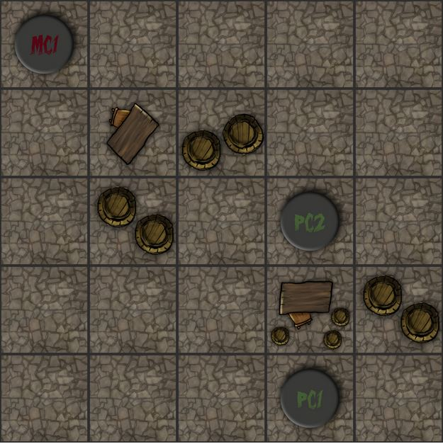

User Name:
Password:
The moldy basement is a grid based dungeoun adventure game in the vein of Divinity: Original Sin , Xcom: Enemy Unknown and Fire Emblem. All are great games, which I won't be able to compete with, but I hope you enjoy this tribute.
The objective is to clear a map by defeating the other players characters. The player is given a choice of three maps. The easiest map is a 5x5 grid and the player will have 2 characters to control. The medium map is an 8x8 with 2 characters. The hardest is a 10x10 and the player will get 3 characters. Each side (in this case the player and the "AI") will be given a choice from a number of characters to use on the map. Each character will have a class. Each with it's own unique abilities and attributes. It is best to choose characters that have abilities that complement the others.
After the map and characters have been selected the first round begins. A simulated dice roll will determine who goes first between the player and the "AI". After this a series of rolls will determine the initiative order, or the order in which the player's characters will get to move and attack. Players will then select where to place characters on the map. There is a middle line across the map which cannot be crossed on the first round. During the first round players may not move or attack. Once all characters are placed, the first round ends. The remaining rounds continue with the same turn order until one player loses all characters or quits. During these remaining rounds the players may move and attack without restriction (other than obstacles on the map).
During each players turn they will be allowed to move their characters across tiles on the map. The amount of tiles a character can move is dependent upon their class, their movement speed (total number of tiles that character can move in a turn), and the amount of action points they have. Moving one tile costs a sinlge action point. The character does not have to move as many tiles as their movement speed but they cannot exceed it (except the "Ranger" class. Discussed later).
A character may move and attack in any order and as many times as they want so long as they have the action points to pay the cost. Some character abilities may allow the character to move or attack without spending an action point, but it will cost something else so be careful.
Each map will have obstacle tiles that cannot be moved on or across without using a special ability. Characters may not attack through an obstacle either so these can be used to hide a character from damage.
Every character has a base attack that costs 1 action point to use. It does damage up to their attack value. When a character choses to attack a simulated dice roll will determine whether the attack succeeds and upon success a dice roll will determine the amount of damage done. Certain conditions will lead to a critical attack which provides a small multiplier to the damage done. As stated before each character has a special ability that will either give them an attack or movement boost.
The player will be given a choice between 4 different characters. The player may only chose one of each character type. Each of the following links contains a character description, including an explanation of it's special abilities.
Each character has two special abilities that can have a huge affect on the game. The player should be careful how they use these abilities as some may cost them a turn or an attack.
To see an example of what the game grid will look like with a game in progress click on the image.
